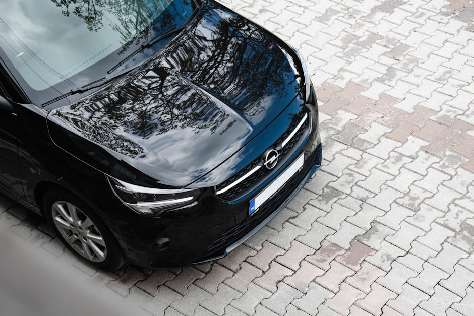

Kivitööde eelarve planeerimine — kuidas üllatusi vältida
Realistlik kivitööde eelarve koosneb kolmest osast: materjal 30–50%, paigaldus + alus 50–70% ning 10–15% reserv ettenägematute kulude jaoks (aluseprobleemid, sademevee lahendused, kaevetööde üllatused). Kui pakkumine tundub kahtlaselt odav, on tavaliselt välja jäetud alustööd või äärekivid — just need read tekitavad hiljem suurimad lisaarved.
Millest kivitööde eelarve tegelikult koosneb
Iga kivitööde projekt on sisuliselt kolmekihiline kook: aluskonstruktsioon (killustik, geotekstiil, kaevetööd), kivimaterjal ja paigaldustöö. Paljud tellijad vaatavad ainult kivi hinda kataloogis — see on tüüpiline põhjus, miks lõppsumma tundub kaks korda suurem kui esialgne ootus.
Tüüpiline kuluosakaal 100 m² sissesõidul
| Kuluartikkel | Osakaal kogusummast | Vahemik €/m² (2026) |
|---|---|---|
| Kivimaterjal (betoon, h=60–80 mm) | 30–40% | 15–28 €/m² |
| Aluskonstruktsioon (kaeve, killustik, geotekstiil) | 25–35% | 18–32 €/m² |
| Paigaldustöö | 20–28% | 18–25 €/m² |
| Äärekivid + paigaldus | 8–12% | 22–35 €/jm |
| Sademevee lahendused (renn, sulgur) | 2–6% | 40–90 €/jm |
| Reserv (ettenägematu) | 10–15% | — |
Kui graniidist tänavakivi asendab betoonkivi, kasvab materjali osakaal 50–60%-ni ja kogueelarve 30–80%. Looduskivi paigaldus on ka 15–25% aeglasem (1 paigaldaja teeb 8–12 m² päevas vs. betoonkivil 15–25 m²/päevas), mis kandub paigaldustöö hinda.
Kuidas tekib 10–15% reservi vajadus
Kogemus 200+ projektilt näitab, et keskmiselt 3 projekti 4-st kohtab vähemalt ühe ootamatuse, mis lisab 5–15% eelarvele. Reservi raha ei ole "võib-olla kuluv" raha — see on raha, mille kasutamise tõenäosus on suurem kui 70%.
Levinumad ettenägematud kulud
- Pehme pinnas sügavamal kui 40 cm — vajab täiendavat väljakaevet ja geotekstiili (+ 6–12 €/m²)
- Vanad torustikud / kaablid — kaevetööde aeglustumine, käsitsitöö osakaal kasvab (+ 200–800 €)
- Sademevee teekonna ümberkujundamine — drenaažitorud, lineaarrenn (+ 300–1 200 €)
- Kalde korrigeerimine — kui maja vastas oli vana asfalt vale kallakuga, võib vajada 5–15 cm lisapinnast
- Äärekivi kõrguse korrigeerimine — naabri olemasoleva piirde või tee suhtes
Loe põhjalikku ülevaadet vigadest ja kuidas neid vältida: kivitööde kõige levinumad vead.
Saadame 24 tunni jooksul tasuta hinnapakkumise koos kuluartiklite jaotusega.
Pakkumiste võrdlemine — millele tegelikult vaadata
Kui sul on käes 3 pakkumist ja need erinevad 30–60%, ei tähenda see, et üks tegija on rohkem ahne. Tavaliselt tähendab see, et pakkumised ei kata sama tööd. Enne hinna võrdlemist tee pakkumistest võrdluskõlblik tabel.
Kontrollnimekiri iga pakkumise jaoks
| Kontrollida | Mida küsida | Miks oluline |
|---|---|---|
| Aluskihi paksus | Mitu cm killustikku ja millises fraktsioonis? | EVS 901-3 nõuab sissesõidul ≥ 25 cm |
| Kivi paksus | 60, 80 või 100 mm? | Sissesõidule on miinimum 60 mm, kaubikuga 80 mm |
| Standard | Kas materjal vastab EVS-EN 1338 / 1342? | Tagab survetugevuse ja külmakindluse |
| Äärekivi | Sisaldab pakkumine äärekivi koos paigaldusega? | Sageli kõrvale jäetud — lisa 22–35 €/jm |
| Käibemaks | Hind koos käibemaksuga? | 22% vahe muudab võrdluse võimatuks |
| Garantii | Mitu aastat ja millele? | Mõistlik on 1–2 aastat paigaldusele |
| Sademevee lahendus | Kuidas vesi sissesõidult ära juhitakse? | Lineaarrenni puudumine = 5–15 a pärast probleem |
Vt eraldi artikkel: sissesõidu kalle ja libisemine — sealt leiad, miks kalle ja drenaaž on eelarve mõttes võrdselt olulised kivimaterjaliga.
Varjatud lisade märkamine pakkumises
Kõige sagedasem üllatusarve tekib siis, kui pakkumise lõpus on read nagu "lisatööd vastavalt vajadusele", "kaevetööd hinnastatud eraldi" või "materjali transport tellija kanda". Need ei ole pettus — need on jätmised. Aga need on need read, mis muudavad odava pakkumise tagantjärgi kalleimaks.
Punased lipud pakkumises
- Pakkumine ühel A4-l ilma kuluartikleid lahti kirjutamata
- Aluskihi paksust pole määratletud sentimeetrites
- Hind kuvatud ainult "alates X €/m²" — ilma fikseeritud koguhinnata
- Käibemaksu ei ole eraldi välja toodud
- "Garantii kuni 5 aastat" — kontrolli, millele täpselt (ainult materjal? paigaldus? alus?)
- Mitte ühtegi viidet standarditele (EVS-EN 1338, EVS 901-3)
- Maksetingimused: 100% ettemaks enne tööde algust
Mõistlik maksegraafik on tüüpiliselt: 30% ettemaks materjali tellimiseks, 40% töö keskel pärast aluse valmimist, 30% pärast üleandmist. Kui pakkuja küsib kogu summa ette, on suurem risk, et eelarve hakkab "jooksma".
Eelarve koostamise kontrollkäik samm-sammult
- Mõõda pind: kivipind m², äärekivi jm, sõidutee laius
- Vali kivi klass: betoon (15–28 €/m²) vs. graniit (35–95 €/m²) — abiks tänavakivi paigalduse ülevaade
- Korruta paigaldushinnaga: 18–25 €/m² betoonkivi, 25–40 €/m² graniit
- Lisa alustööd: 18–32 €/m² olenevalt pinnasest
- Lisa äärekivi: 22–35 €/jm koos paigaldusega
- Lisa drenaaž / lineaarrenn kui maja-pool kogub vett
- Korruta käibemaksuga (1,22)
- Lisa 10–15% reservi — see on planeeritud, mitte juhuslik
Suuremate äripindade projektide puhul (üle 500 m²) langeb €/m² hind 8–15%, sest masinad ja meeskond töötavad efektiivsemalt. Väiksematel objektidel (alla 50 m²) tuleb arvestada mobiliseerimistasuga (200–500 €), mis ei sõltu pinna suurusest.
Tüüpilised eelarve näited 2026
| Projekt | Pind | Materjal | Eelarve vahemik (sh KM) |
|---|---|---|---|
| Eramaja sissesõit | 80 m² | Betoonkivi 60 mm | 4 200 – 6 800 € |
| Eramaja sissesõit + tagahoov | 180 m² | Betoonkivi 80 mm | 9 500 – 14 500 € |
| Sissesõit graniidist | 100 m² | Soome graniit 80 mm | 9 800 – 15 500 € |
| Aiatee + terrass | 60 m² | Betoonkivi 60 mm | 3 200 – 5 200 € |
| Korterelamu parkla | 400 m² | Betoonkivi 80 mm | 22 000 – 32 000 € |
| Ärikinnistu plats | 1 200 m² | Betoonkivi 100 mm | 72 000 – 110 000 € |
Need on suunavad vahemikud — täpne hind sõltub pinnasest, ligipääsust, kõrgustevahedest ja mustrist. Vt ka kivitööde 2026 trendid, kus käsitleme materjalide hinnaliikumisi sel hooajal.
Kas tellida materjal ise või lasta paigaldajal?
Lühike vastus: lase paigaldajal tellida, kui projekt on alla 500 m². Põhjused on lihtsad — tehased annavad paigaldusettevõtetele 5–15% mahupõhist hinda, transport on optimeeritud ning kvaliteediprobleemi korral ei pea sina suhtlema tehasega. Üksikasjalikuma võrdluse leiad artiklist tänavakivi tellida tehasest ise.
Anname kuluartiklite kaupa pakkumise — ilma "lisatööd vastavalt vajadusele" ridadeta.
Korduma kippuvad küsimused
Kui suur reserv tuleks kivitööde eelarvele lisada?
Soovitame 10–15% kogusummast. Kogemus näitab, et ~75% projektidest kohtab vähemalt ühte ettenägematut kulu (pehme pinnas, vanad torud, sademevee korrigeerimine). Üle 1 000 m² projektidel võib reserv olla 8–10%, alla 100 m² projektidel pigem 12–15%.
Miks erinevad pakkumised samale tööle 30–60%?
Tavaliselt erinevad pakkumiste sisud, mitte hinnad. Üks sisaldab äärekivi ja drenaaži, teine ei sisalda. Üks pakub 25 cm killustikku, teine 15 cm. Üks toob hinnad koos käibemaksuga, teine ilma. Enne võrdlemist tee võrdluskõlblik tabel kuluartiklite kaupa.
Mis on betoonkivi ja graniidi hinnavahe 100 m² sissesõidul?
Betoonkivist (60–80 mm, EVS-EN 1338) sissesõit 100 m² maksab 2026. aastal koos paigaldusega tüüpiliselt 5 500 – 8 500 €. Graniidist sama pind 9 800 – 15 500 €. Vahe tuleb materjalist (35–95 €/m² vs. 15–28 €/m²) ja aeglasemast paigaldusest.
Kui pikk garantii on kivitöödele mõistlik?
1–2 aastat paigaldustööle on tavapärane ja realistlik. Kivimaterjalile annab tehas eraldi garantii (külmakindlus, värvipüsivus). Kui pakkuja lubab "5+ aastat garantii kõigele", küsi täpselt mille kohta — sageli puudutab see ainult kindlat kuluartiklit.
Kas saab eelarvet hoida madalal, jättes alustöö lihtsamaks?
Mitte ilma riski võtmata. Alus on 25–35% kogueelarvest ja just see määrab 90% sellest, kas pind kestab 5 või 25 aastat. Aluse pealt kokku hoides tekivad augukohad, vajumised ja kalde muutused 3–7 aasta jooksul. Loe ka sillutuskivi järelduskontrolli juhendit.